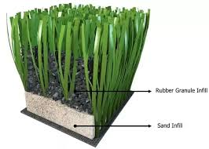

El caucho:
¿La opción más óptima?
Un análisis crítico sobre el uso de relleno de caucho en canchas de césped sintético y sus consecuencias.
Riesgos de Enfermedades
Colegio N. S. del CaminoEl caucho no es inerte. Al estar expuesto a la intemperie en canchas deportivas, experimenta una degradación física constante que afecta a los deportistas.
Erosión Climática y Uso
La radiación solar (rayos UV), el viento y la fricción constante del juego erosionan las partículas de caucho, fragmentándolas en partículas microscópicas llamadas microplásticos.
Vías de Ingreso al Organismo
Debido a su tamaño microscópico, estas partículas entran fácilmente al organismo por tres vías directas: la inspiración (al inhalar el polvo suspendido), la alimentación e ingesta accidental (bebeción).
Alerta Médica: Múltiples investigaciones de salud confirman que la acumulación de microplásticos en el torrente sanguíneo provoca problemas respiratorios, cardiovasculares y, según estudios emergentes, podría tener vínculos con agentes carcinógenos.
Generación de Microplásticos
Colegio N. S. del CaminoLa cantidad de micropartículas suspendidas y esparcidas es alarmante. Analicemos las cifras estimadas basándonos en la Cancha Verde Grande de nuestro colegio.
Proporción de Generación
Por cada metro cúbico (m³) de plástico expuesto, se estima una liberación de 0,02 a 2 gramos de microplásticos por semana.

Fuentes de Microplásticos
Colegio N. S. del CaminoComparativa científica de la cantidad de partículas de microplásticos por m³ encontradas en diferentes fuentes cotidianas y del entorno.
| Fuente Evaluada | Partículas / m³ |
|---|---|
| 🦀 Cangrejo (Mariscos) | 592.00 |
| 🧊 Cubos de hielo | 19.00 - 178.00 |
| 🍵 Bolsas de té | 8.60 - 52.30 |
| 🌬️ Aerotransportado (Aire) | 3.99 - 41.12 |
| 🍱 Envases de comida | 3.00 - 29.00 |
| 📦 Empaques plásticos | 4.00 - 18.70 |
| 🧂 Sal de mesa | 9.77 |
| 🐟 Pescado de consumo | 0.63 - 7.00 |
| 🦪 Ostra marina | 3.34 |
Visualización de Concentración (Máximos)
Soluciones y Alternativas Ecológicas
Colegio N. S. del Camino¿Podemos cambiar la situación? Sí. Existen rellenos de origen 100% natural que eliminan por completo el peligro de microplásticos y reducen la temperatura de la cancha del Colegio Nuestra Señora del Camino.
Corcho Natural
Proviene de la corteza del alcornoque. Es 100% biodegradable, no genera toxinas y tiene una amortiguación y elasticidad idénticas a las del caucho convencional.
Fibra de Coco + Arena
Mezcla orgánica de fibra de coco y arena de sílice fina. Retiene la humedad natural de la lluvia reduciendo el calor de fricción de las fibras plásticas del césped.
Arena Sílice Pura
El relleno de arena redondeada de sílice es una de las opciones tradicionales más estables, no libera partículas plásticas y reduce sustancialmente el coste inicial.